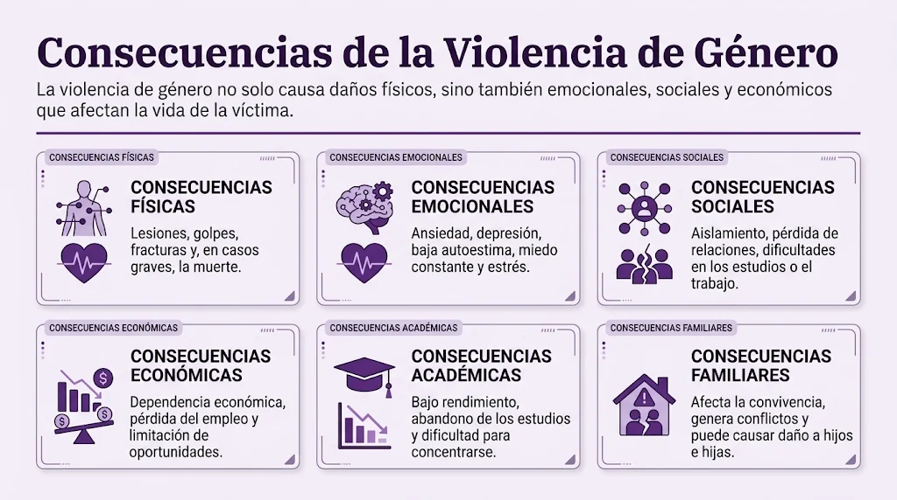

2020 – Pandemia y confinamiento
Durante la emergencia sanitaria por COVID-19, muchas víctimas permanecieron encerradas con sus agresores, lo que dificultó pedir ayuda y acceder a servicios de protección.
2021 – Violencia en los hogares
La violencia intrafamiliar continuó siendo una preocupación nacional. Se hizo evidente la importancia de reconocer las agresiones psicológicas, físicas y sexuales dentro del entorno familiar.
2022 – Mayor preocupación por los femicidios
Las organizaciones sociales intensificaron sus llamados a prevenir los asesinatos de mujeres y a mejorar los mecanismos de protección para las víctimas.
2023 – Aumento de las muertes violentas
La Fundación ALDEA documentó 321 femi(ni)cidios durante el año, incluyendo casos ocurridos en entornos familiares, sexuales y relacionados con sistemas criminales.
2024 – Consecuencias para las familias
ALDEA registró 274 casos en su consolidado anual, incluyendo cinco víctimas desaparecidas en 2023 cuyos cuerpos fueron encontrados en 2024. La organización identificó al menos 131 menores que quedaron en orfandad.
2025 – Persistencia de la violencia
ALDEA documentó 411 asesinatos de mujeres por razones de género, incluidos 137 casos en entornos íntimos, familiares o sexuales, 256 relacionados con sistemas criminales y 18 transfeminicidios.
Principales factores asociados
Desigualdad de género
Las relaciones desiguales de poder y las creencias que justifican el control sobre las mujeres pueden favorecer situaciones de violencia.
Dependencia económica
La falta de recursos propios puede dificultar que una víctima abandone una relación violenta.
Normalización del maltrato
Los celos excesivos, las amenazas y el control de la pareja pueden confundirse con muestras de amor, aunque son señales de alerta.
Dificultades para obtener protección
El miedo a denunciar, la falta de información y las barreras de acceso a los servicios pueden mantener a las víctimas en situaciones de riesgo.
Consecuencias de la violencia de género
